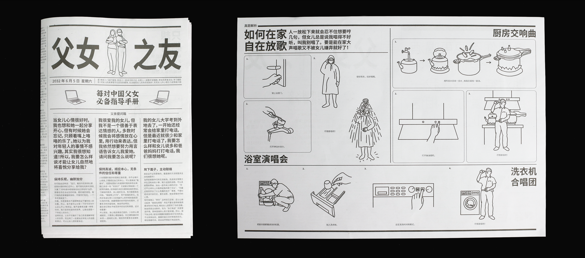
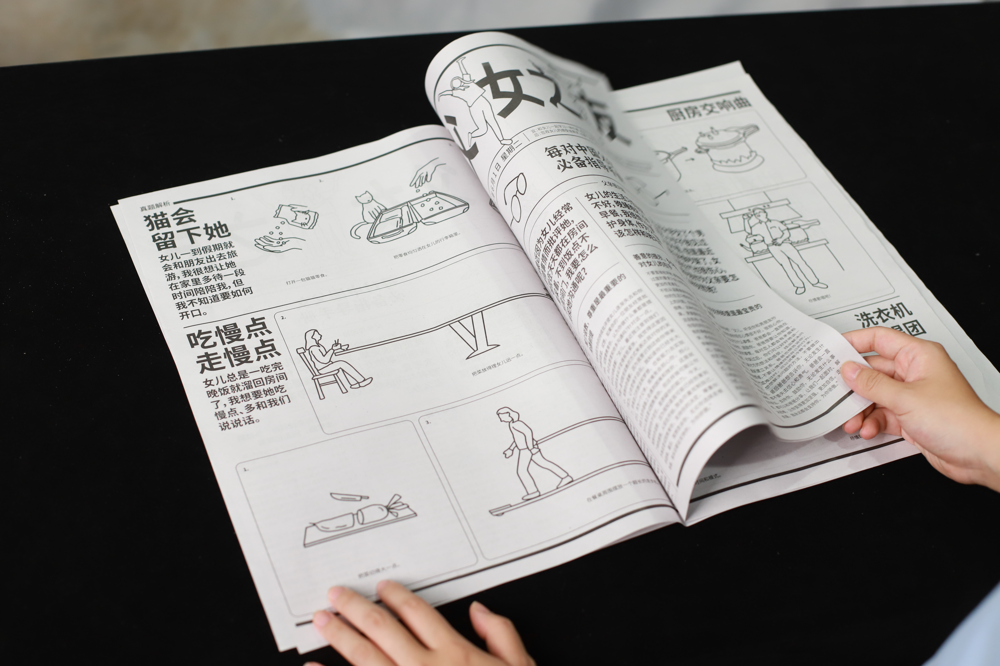
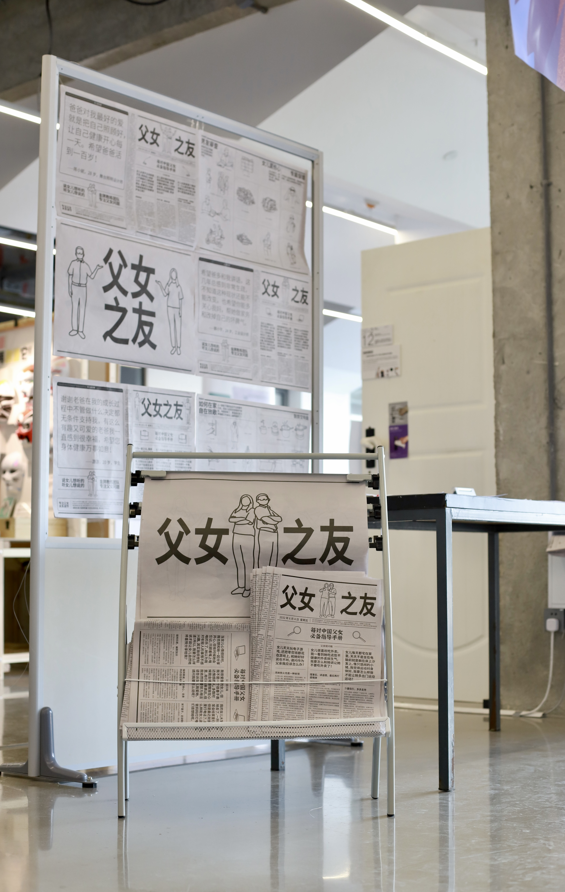
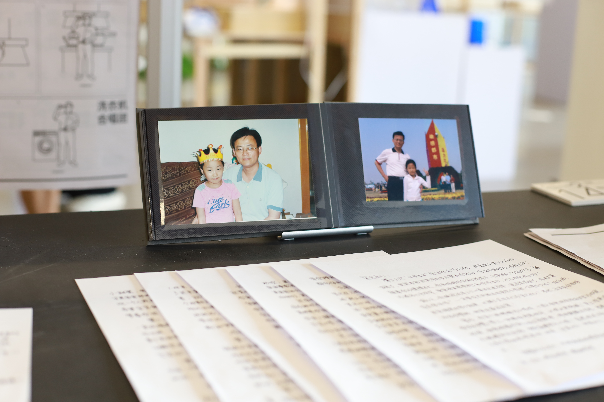
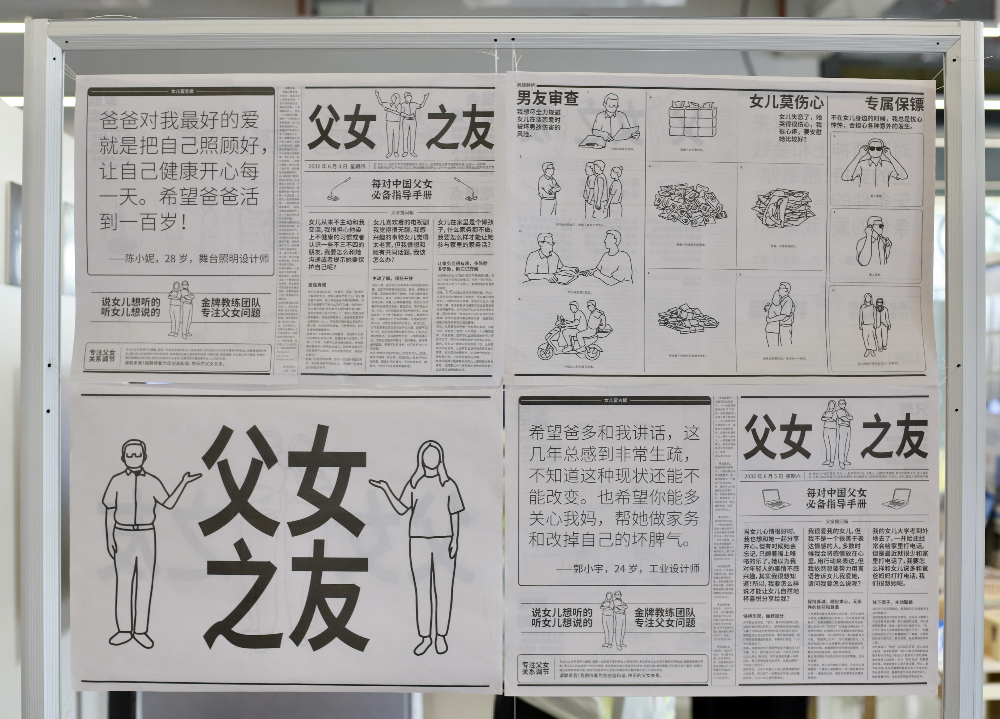

Father-Daughter Companion
A publication project that began from a familiar tension in East Asian father-daughter relationships, and evolved into a way of communicating with a father known for his serious lectures. The work takes the form of a five-issue newspaper set within the fictional scenario of a "father's office," including a whimsical illustrated guide addressed to him. What started as satire gradually turned into affection: an appreciation of my great dad, offered through the language of design.



